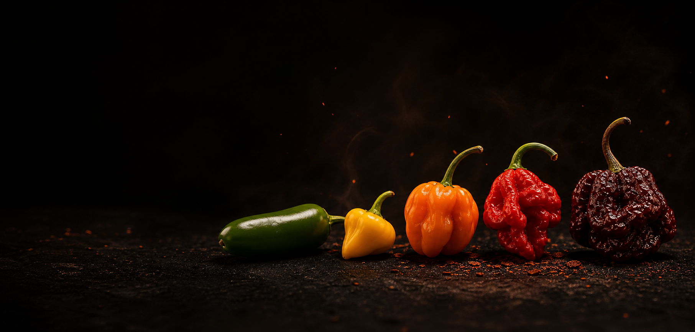

As mais delicadas
Biquinho, Cambuci, Shishito e Poblano.
Doçura, frescor e calor quase imperceptível.Atlas sensorial · Brasil e o mundo
Da delicadeza ao fogo extremo.
Explore as pimentas mais famosas, saborosas e intensas do Brasil e do mundo em uma jornada por ardência, aroma, origem e gastronomia.

Fotografia editorial · Capsicum
Manifesto Pepper Atlas
Pimenta não é apenas ardência. É fruta, fumaça, perfume, acidez, doçura, cultura e memória gastronômica. Algumas são delicadas e quase doces. Outras desafiam os limites do paladar humano. Todas contam uma história.
Termômetro sensorial
A unidade SHU estima a concentração de capsaicina, responsável pela sensação de calor. Cultivo e maturação podem alterar os valores.
24 retratos de sabor
As brasileiras abrem a coleção. Depois, o atlas atravessa México, Caribe, Ásia, Europa e as fronteiras do calor extremo.
Território em destaque
Da Amazônia ao Cerrado, o Brasil revela pimentas de perfume intenso, beleza vibrante e personalidade única. Biquinho, Murupi, Cumari-do-Pará, Malagueta e Pimenta-de-Cheiro mostram que o fogo brasileiro não está apenas na ardência, mas na cultura, no aroma e na memória da cozinha.
Curadoria sensorial
Quatro caminhos para encontrar a pimenta que conversa com o seu paladar e com a sua cozinha.
Biquinho, Cambuci, Shishito e Poblano.
Doçura, frescor e calor quase imperceptível.Dedo-de-Moça, Jalapeño, Chipotle, Habanero e Espelette.
Camadas aromáticas para pratos completos.Pimenta-de-Cheiro, Murupi, Cumari-do-Pará e Scotch Bonnet.
Perfume intenso antes mesmo da primeira mordida.Ghost Pepper, Carolina Reaper e Pepper X.
Uso mínimo, técnica e respeito absoluto.